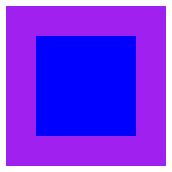

3 Day 3 – Overlay
REVIEW Beside and above
3.1 Image To Code Kata
read
Write the simplest code possible to make this shape:

(Note: This shape is 50 pixels wide and 50 pixels tall)
code
3.2 Overlay Kata
read
Write the simplest code possible to make this shape:

(Note: This shape is 80 pixels wide and 80 pixels tall)
code